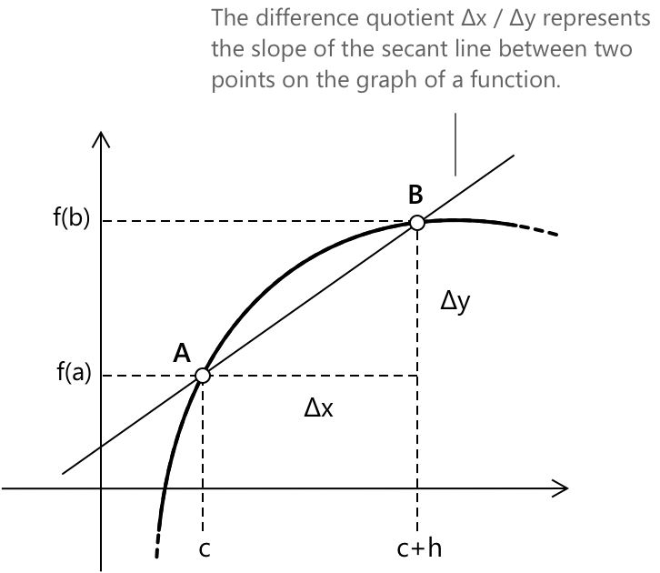

Різницевий дріб
Що таке приріст функції (різницевий коефіцієнт)
Розглянемо функцію \(y = f(x)\), визначену на проміжку \([a, b]\), та два дійсні числа \(c\) і \(c + h\) при \(h \neq 0\), що обидва лежать у проміжку \([a, b]\). Різницевий коефіцієнт \(f\) у точці \(c\) визначається як відношення:
\[ \frac{\Delta y}{\Delta x} = \frac{f(c+h)-f \left(c \right)}{h} \]
Умова \( h \neq 0 \) є необхідною: при \( h = 0 \) точки \( A \) і \( B \) збігаються, січна не визначена, а відношення набуває вигляду \( \frac{0}{0} \). Розглянемо точки \(A\) і \(B\) з координатами:
- \(A(c, f \left(c \right))\)
- \(B(c+h, f(c+h))\)
різницевий коефіцієнт \(f\) у точці \(c\) є кутовим коефіцієнтом прямої, що проходить через точки \(A\) і \(B\).

Різницевий коефіцієнт є фундаментальним для означення похідної. Похідна функції в точці є границею різницевого коефіцієнта при наближенні \(h\) до нуля.
\[f’ \left(c \right) = \lim_{h \to 0} \frac{f(c+h)-f \left(c \right)}{h} \]
Цей процес, відомий як знаходження границі різницевого коефіцієнта, дає миттєву швидкість зміни функції в цій точці, або, що еквівалентно, кутовий коефіцієнт дотичної до графіка функції.
Загалом, різницевий коефіцієнт вимірює, як функція змінюється на скінченному відрізку. У міру того як інтервал звужується, він переходить від глобальної міри зміни до локальної.
-
Різницевий коефіцієнт дає наближення швидкості зміни. Він обчислюється на скінченному проміжку \( [x, x + \Delta x] \) і представляє середню швидкість зміни.
-
Похідна дає точну швидкість зміни. Вона обчислюється шляхом взяття границі при \( \Delta x \to 0 \) і представляє миттєву швидкість зміни.
Варто зауважити, що різницевий коефіцієнт і похідна вимірюють одну й ту саму геометричну величину на різних масштабах.
Альтернативні форми
-
\[ \text{1.} \quad \frac{f(c+h) - f(c)}{h} \]
-
\[ \text{2.} \quad \frac{f(x_1) – f(x_0)}{x_1 – x_0} \]
-
\[ \text{3.} \quad \frac{f(x + \Delta x) – f(x)}{\Delta x} \]
-
\[ \text{4.} \quad \frac{f(x + dx) – f(x)}{dx} \]
Наведені вище вирази представляють одну й ту саму величину і відрізняються лише позначеннями двох точок, залежно від використовуваної нотації.
Приклад 1
Обчислимо різницевий коефіцієнт функції \(y = f(x) = 3x^2-x\) у точці \(c = 1\) для довільного \(h\).
Визначимо \(f(c+h) = f(1+h)\):
\[ \begin{align*} f(1+h) &= 3(1+h)^2-(1+h) \\[0.4em] &= 3(1 + h^2 + 2h)-1-h \\[0.4em] &= 3 + 3h^2 + 6h-1-h \\[0.4em] &= 3h^2 + 5h + 2 \end{align*} \]
Визначимо \(f \left(c \right) = f(1)\):
\[
f(1) = 3(1)^2 – 1 = 3 – 1 = 2
\]
Обчислимо різницевий коефіцієнт: \[ \begin{align*} \frac{f(1+h)-f(1)}{h} &= \frac{(3h^2 + 5h + 2)-2}{h}\\[0.4em] &= \frac{3h^2 + 5h + 2-2}{h} \\[0.4em] &= \frac{3h^2 + 5h}{h}\\[0.4em] &= 3h + 5 \end{align*} \]
Вираз \(3h + 5\) представляє, при зміні \(h\), кутовий коефіцієнт січної, що проходить через точку \(A\) на графіку з абсцисою 1.
Приклад 2
Тепер розглянемо функцію, яка не є поліномом: \( f(x) = \sqrt{x} \), обчислену в точці \( c = 4 \). Процедура така сама, як і раніше, але спрощення різницевого часткого потребує додаткового кроку. Визначимо \( f(4+h) \):
\[ f(4+h) = \sqrt{4+h} \]
Визначимо \( f(4) \):
\[ f(4) = \sqrt{4} = 2 \]
Різницеве часткове має вигляд:
\[ \frac{f(4+h) – f(4)}{h} = \frac{\sqrt{4+h} – 2}{h} \]
У такому вигляді цей вираз неможливо спростити безпосередньо, оскільки чисельник і знаменник не мають очевидного спільного множника. Стандартний підхід полягає в тому, щоб раціоналізувати чисельник, помноживши і чисельник, і знаменник на спряжений вираз \( \sqrt{4+h} + 2 \):
\[ \begin{align*} \frac{\sqrt{4+h} – 2}{h} \cdot \frac{\sqrt{4+h} + 2}{\sqrt{4+h} + 2} &= \frac{(4+h) - 4}{h\left(\sqrt{4+h} + 2\right)} \\[0.4em] &= \frac{h}{h\left(\sqrt{4+h} + 2\right)} \\[0.4em] &= \frac{1}{\sqrt{4+h} + 2} \end{align*} \]
Множник \( h \) скорочується, і результат є визначеним для кожного \( h \neq 0 \).
Вираз \( \dfrac{1}{\sqrt{4+h}+2} \) представляє кутовий коефіцієнт січної, що проходить через точки \( A = (4,\ 2) \) та \( B = (4+h,\ \sqrt{4+h}) \) при зміні \( h \).
При \( h \to 0 \) цей кутовий коефіцієнт наближається до \( \dfrac{1}{4} \), що є саме похідною \( \sqrt{x} \) у точці \( x = 4 \).
Вибрана література
-
Purdue University, N. Egbert. The Difference Quotient
-
Dartmouth College. The Difference Quotient and the Derivative
-
Princeton University. Differential and Integral Calculus
-
Harvard University, O. Knill. Introduction to Calculus
-
California State University San Marcos. Difference Quotient